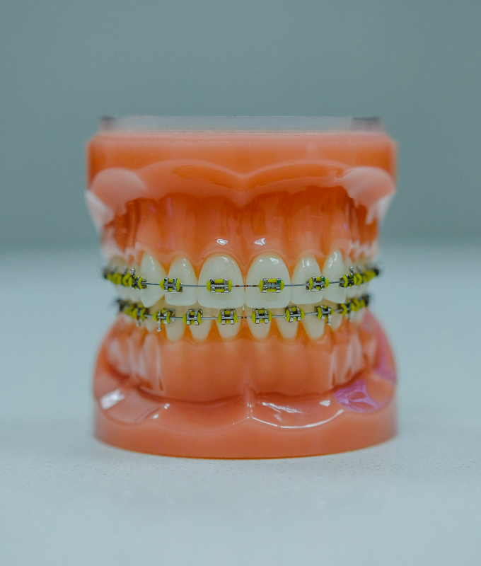
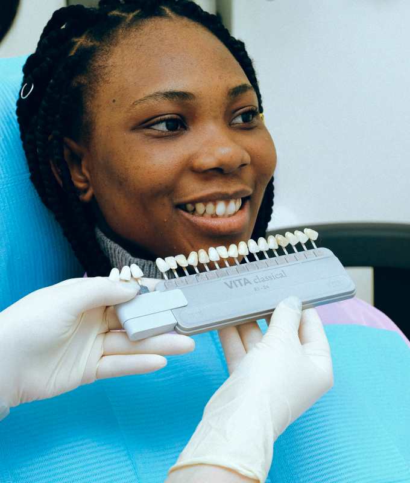
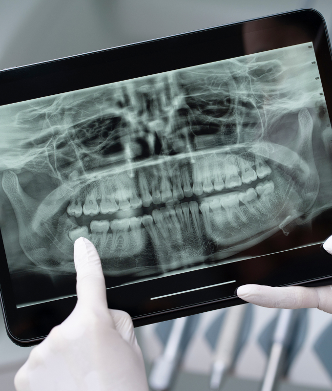

Implantodontia
O que é?
A Implantodontia é a especialidade que substitui dentes perdidos utilizando implantes dentários. Pequenos "pinos" de titânio são cirurgicamente inseridos no osso maxilar ou mandibular, funcionando como raízes artificiais. Sobre eles, são fixadas coroas (dentes artificiais) que se parecem e funcionam como dentes naturais.
Para quem é indicado?
Para pessoas que perderam um, vários ou até todos os dentes e buscam uma solução fixa, segura e duradoura.
Prótese dentária
O que é?
A Prótese Dentária foca na reposição de dentes ausentes e na restauração de dentes danificados, devolvendo a função e a estética. Existem diversos tipos, como próteses totais (dentaduras), próteses parciais removíveis (pontes móveis), próteses fixas (coroas e pontes fixas sobre dentes ou implantes).
Para quem é indicado?
Para pacientes com perda parcial ou total de dentes, ou que precisam restaurar dentes muito desgastados ou fraturados.
Odontopediatria
O que é?
É a área da odontologia dedicada à saúde bucal de bebês, crianças e adolescentes. O foco está na prevenção (cáries, problemas gengivais), no diagnóstico precoce de problemas, no tratamento adequado para cada faixa etária e na orientação sobre higiene e hábitos saudáveis.
Para quem é indicado?
Para todos os pacientes desde o nascimento dos primeiros dentes até a adolescência.
Ortodontia
A Ortodontia é a especialidade que corrige a posição dos dentes e dos ossos maxilares quando estão desalinhados. Utiliza aparelhos para movimentar os dentes gradualmente para a posição correta.
Lentes de Porcelana
As lentes de contato dental são finas lâminas de cerâmica feitas sob medida, que são cimentadas na superfície frontal dos dentes. Elas permitem alterar cor, formato e tamanho.
Exodontia
A Exodontia é o procedimento cirúrgico para remover um ou mais dentes. Isso pode ser necessário por diversos motivos, como cáries muito extensas que impossibilitam a restauração.
Entre em contato
Telefone
(99) 9 9999-7777 (99) 9999-7777Redes sociais
Intagram: @ClicaDrPigiotou Facebook: Clínica Dr. PigiotouHorário de funcionamento
08:00 às 19:30 (seg - sex) 08:00 às 12:30 (sáb)Endereço
R. Augusto de Mari, 3558 - Portão Próximo ao Shopping PalladiumVenha fazer uma avaliação hoje mesmo
 Rua Augusto de Mari, 3558 - Portão
Rua Augusto de Mari, 3558 - Portão